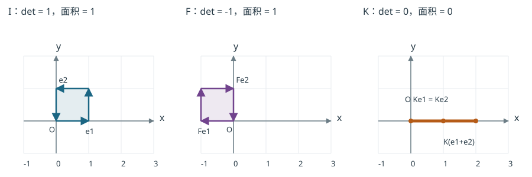
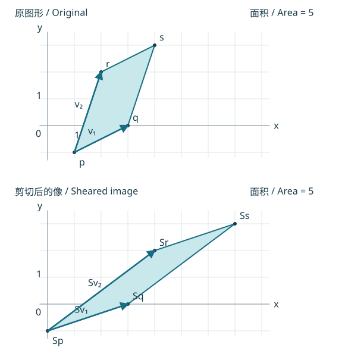

行列式的几何意义与联系
Geometric Meaning and Connections of Determinants
知识与术语速查 / Concepts and Terminology · 本部分学习路线 / Part Overview
图形本身有多大？ How Large Is the Generated Figure?
平行四边形的面积是底乘高。固定一条底边，把另一条边的端点沿平行于底边的直线移动，高度不变，面积也不变。三维中，固定底面，把另一条棱的端点沿平行于底面的平面移动，同样保持“底面积乘高”的体积。
把从同一顶点出发的两条边写成列矩阵 。刚才的二维移动是把 换成 ；这是一条生成边的列替换。面积不变，而列规则也使行列式不变。坐标轴上的矩形则直接给出面积 。这些观察把底、高与行列式联系起来。
教材§3.3，定理9 / Textbook §3.3, Theorem 9
若 ，由它的两列作为邻边生成的平行四边形面积为 。
若 ，由它的三列作为棱生成的平行六面体体积为 。
完整定理汇编 / Complete Theorem Reference。
这里定理中的 就是生成边矩阵，前文记作 。二维有序边的有向面积（signed area）为 ；三维有序棱的有向体积（signed volume）为 。标准单位基的次序取正定向，交换两条边或棱就反转定向，普通图形的大小不变。普通面积和体积始终非负，因此取绝对值。
进一步证明：由底、高与列操作得到定理9 / Further Proof from Bases, Heights and Column Operations
先设 可逆。对 做只用交换与倍加的消元并清去主元上方元素，再转置回来，便以列交换、列替换把 化为对角阵，无需缩放各列。交换生成边不改变图形大小；将一条边加上另一条边的倍数，保持底和相应的高。在三维，将一条棱加上另两条棱的线性组合，保持由那两条棱构成的底面及另一棱的高。因此这些列操作都保持普通面积/体积，也保持行列式的绝对值。最后的对角阵对应矩形/长方体，边长为对角元的绝对值，乘积就是 。
若 不可逆，。由列生成的图形落在 内，二维时为直线或一点，三维时为平面、直线或一点，所以相应二维面积或三维体积为零；同时 。不能在这个情况下使用“所有主元非零”的消元步骤。
变换把面积或体积改变多少？ How Much Does a Transformation Scale Area or Volume?
现在图形已经给定，问题变成同一个线性变换作用于所有点后，大小怎样改变。设 。线性性把边 送到 ，所以变后的生成边矩阵为 。
教材§3.3，定理10 / Textbook §3.3, Theorem 10
设 。
若 ， 是平行四边形区域，则
若 ， 是平行六面体区域，则
允许图形平移，也允许矩阵或图形退化。
完整定理汇编 / Complete Theorem Reference。
以二维为例，定理9和乘积性质给出 三维同理。 的符号记录变换是否反转定向， 才是普通面积或体积的缩放因子。若生成图形本来就退化，公式两侧仍为零。

图中反射 把顶点依次送到 。，定向反转；普通面积仍为1。
塌缩（collapse）矩阵 把 送到 ，单位正方形落在从 到 的线段上，，二维面积为零。并不是“所有点都变成原点”，也不是线段长度为零。
塌缩的原因可以直接用第二部分的结构解释：， 是横轴，因而二维图形的像位于一维子空间。更一般地， 使像落入更低维子空间， 维体积为零；它不意味着所有点都变原点或所有长度都变零。
为什么面积/体积对应行列式？ Another Geometric Derivation
进一步理解：从初等变换看缩放 / Further Reading: Scaling by Elementary Transformations
也可把可逆 写成初等矩阵乘积。交换两个坐标反转定向但不改普通面积/体积；某坐标乘非零 的普通缩放是 ；剪切 平移各层平行截面，截面长度/面积和层间高度不变。它们分别与行列式因子 对应，复合后的因子相乘。
这条路线的每一步是对所有点坐标的同一变换，即左乘；它与定理9证明中的“固定其他生成边，只替换一列”是不同的操作。若 不可逆，则像空间维数不足，由上面的退化分析直接得到零面积/体积。
图形不在原点时 Figures Away from the Origin
图形的位置不影响边的位移。自编例 / Course Example： 四个顶点为 其中 的相邻顶点是 。边向量为 这些位移可以移到原点表示，坐标仍相同；不能直接把两个非原点顶点的位置向量当作这两条边。
用剪切 作用于所有顶点，边矩阵变为

独立核对 / Check. 求四个像顶点，并检验保持面积是否也保持这两条边的长度和夹角。
顶点、边与面积 / Vertices, Edges and Area
像顶点依次是 、、、。相减给 和 ，正是 的两列。原边长分别为 ，变后为 ，不保持长度。两边夹角余弦从 变为 ，也不保持夹角。
一般把平移后的图形写成 ，其中 的一个顶点在原点。线性性给出 平移不改变面积/体积，因此定理10适用于任意位置的平行图形。这里平移只是改变图形位置，非零平移本身不是线性变换。
从平行图形到一般区域 From Parallel Figures to General Regions
教材§3.3还给出未编号推广：若二维区域具有有限面积，或三维区域具有有限体积，线性变换后的大小仍是原来的 倍。完整陈述 / Complete Statement。
对可用小矩形或小盒逼近的区域，可以先分成许多小块，每块的像都有相同缩放因子，再让分割越来越细。这解释了为什么同一规律适用于曲边图形；一般有限面积/体积区域的结论在这里保留，不展开极限构造或测度论。此处“具有面积/体积”仍是前提。
独立检查（自编）。 (a) 把面积为5的平行四边形变成多大？(b) 把体积为4的平行六面体变成多大？(c) 和 行列式都为1，是否作用相同？
答案和局限
- ，面积30，定向反转。(b) ，体积24，定向反转。(c) 不同， 而 。一个行列式数值不能恢复整个矩阵，也不能确定所有长度和夹角。
消元究竟保持什么？ What Does Elimination Preserve?
对可逆的初等矩阵 ，线性使 ，可逆使反向成立：
这是同一组输入 的全部解保持。对方阵系数， 的数值可以改变，但 ，所以是否为零保持。例如取 、。将增广矩阵第一行乘2，就是将 的第一行和方程右端目标向量 的第一分量同时乘2，其余行保持不变。因此 ；解集不变，但 、。长度、夹角一般不保持。
区分两个操作。 左乘 将每个输出向量、每个生成列和方程右端目标向量都送到它的像。若只把生成列 换为 ，则是给定边组中的列操作，第一列保留；不能把这一步的图说成对所有坐标点作同一行操作。前面的反射/塌缩图画的是左乘变换后的所有顶点，公式是 。
前三部分联系题：一个标量的边界 Connecting Parts 1–3: The Limits of One Scalar
行列式把方阵的主元、秩、可逆性和几何缩放联系起来，却不包含全部矩阵信息。用 同时检查这些描述，再以非方阵作对照，可见哪些结论依赖方阵条件。
在综合复习中，进一步比较非方阵的全部解、不同目标向量的相容性，以及消元、LU与行列式公式的用途；也用 的例子辨析面积与长度。题目及反馈见综合复习与完整答案 / Synthesis Exercises and Full Feedback。性质速查 / Property Reference提供各结论的条件和回查入口。
换基时对象与坐标的区别，见第四部分的两组基 / Two Bases in Part 4；行列式还可用于简单信号的无关性检查 / Independence of Simple Signals，其反向判别需要额外条件。